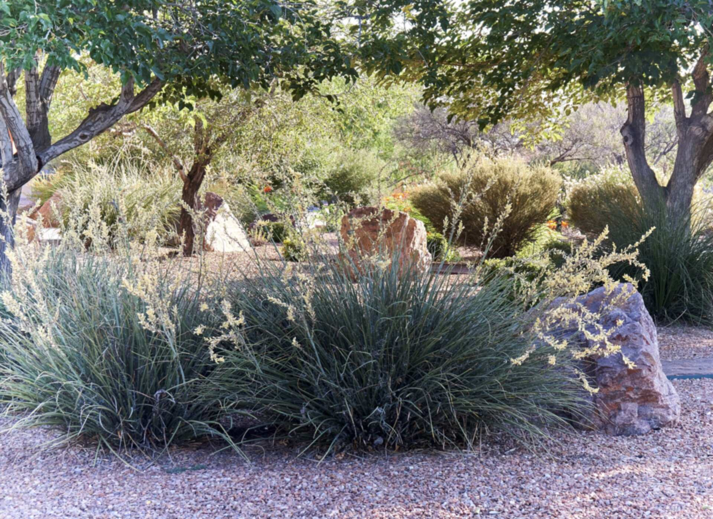
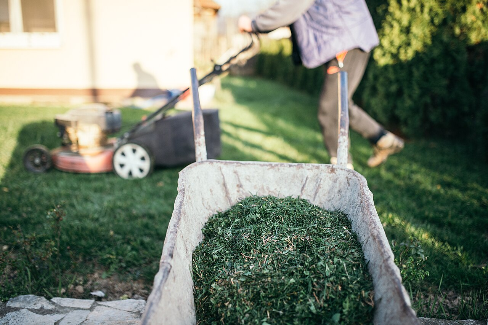
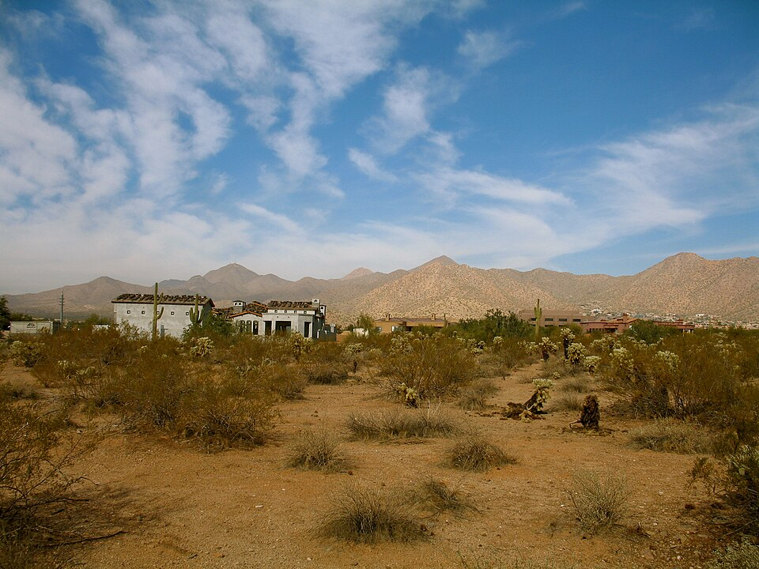
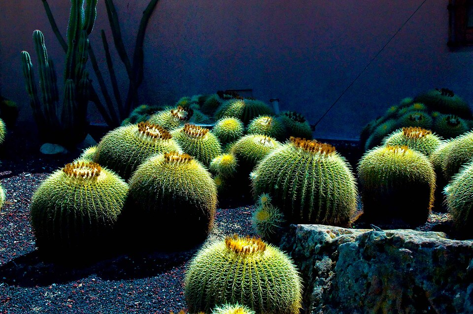
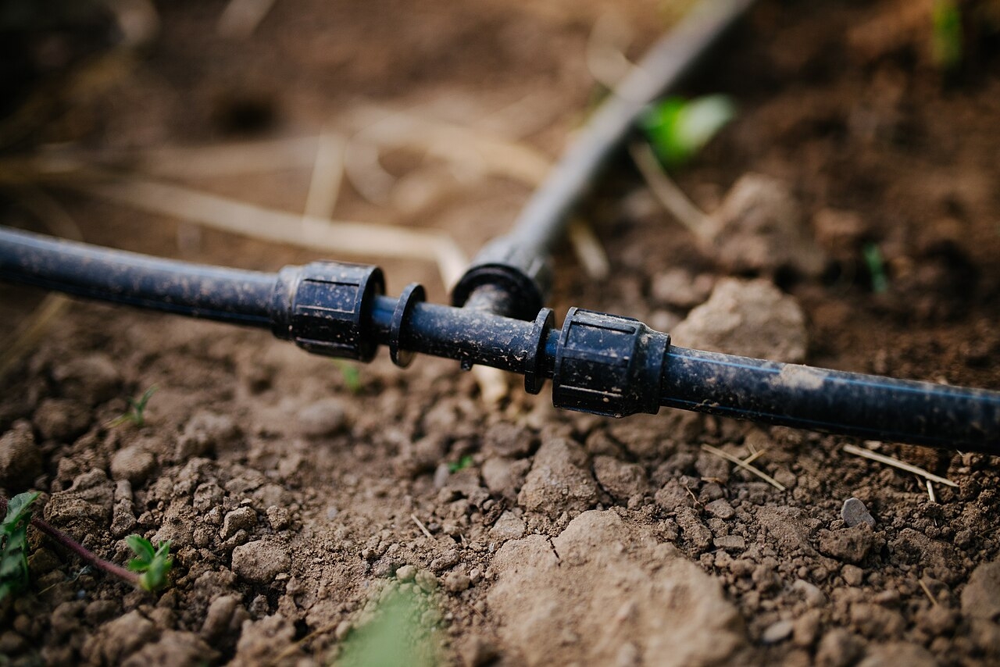
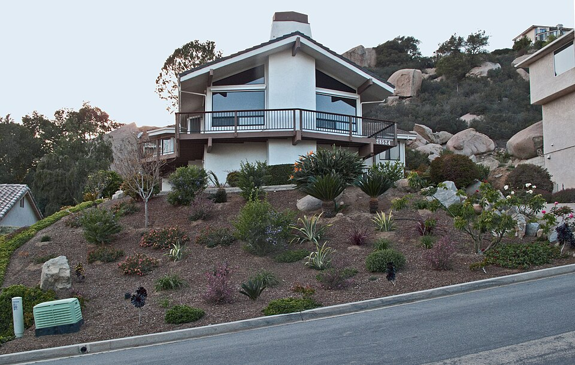
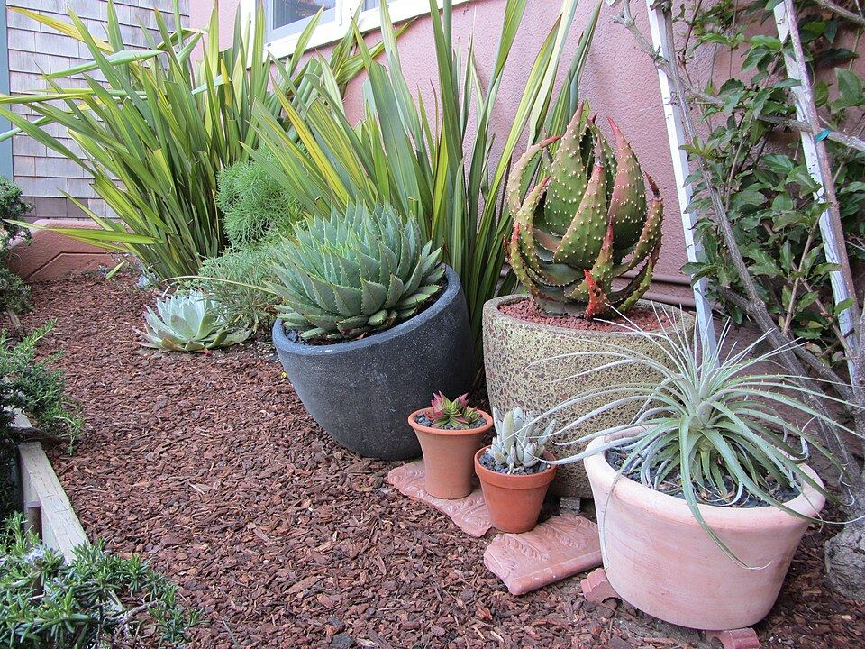
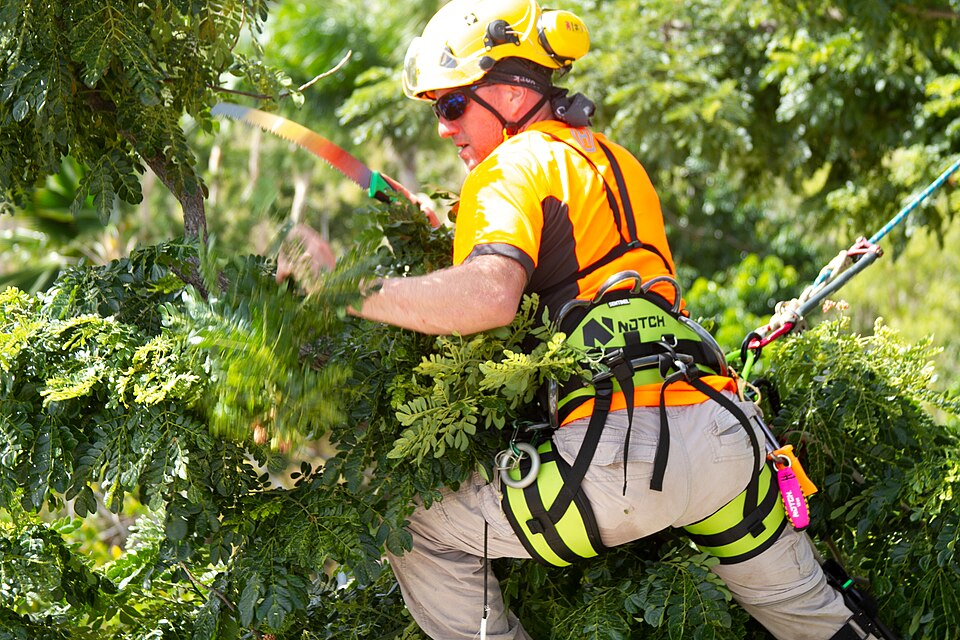
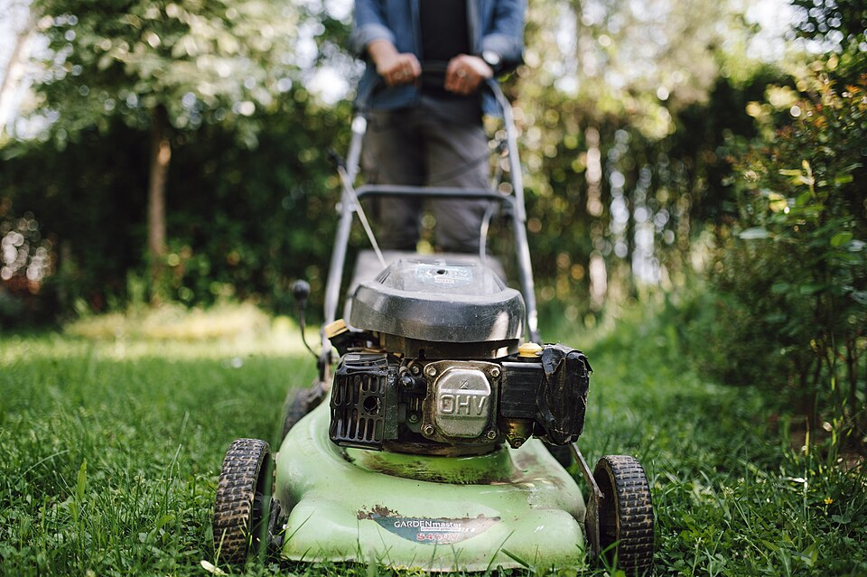
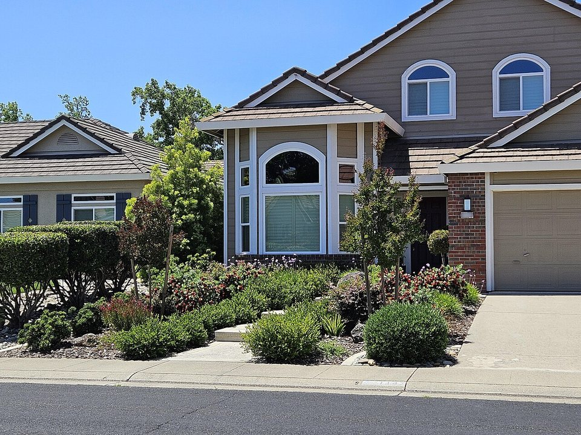

Landscaping in Phoenix
Weekly yard care, desert yard design and tree pruning in central Phoenix, from $140 a month.
- Area
- Central Phoenix
- Visits
- Weekly or every two weeks
- Estimates
- Free, at your yard
- Hauling
- Clippings taken away
Yard services and starting prices
The exact price comes in writing after we see the yard.
- Weekly yard care
Mowing, edging, weeding and a clean patio, on the same day each week.
from $140/mo - Desert yard design
Native plants, gravel and boulders in place of a thirsty lawn.
from $2,500 - Drip irrigation
New lines, emitter repairs and a controller set for the season.
from $350 - Tree and palm pruning
Palo verde, mesquite and palm trimming, branches hauled away.
from $180

How a desert yard redesign goes
-
Walk the yard together
We measure the yard, check where the sun hits in July and ask how you use the space: shade to sit in, room for the dog, a path to the gate.

-
Pick plants that like the heat
Agave, barrel cactus, yellow bells and palo verde, each placed by how much sun its corner gets. You see the plan and the plant list before we dig.

-
Lay the drip lines, then plant
The lines go in first, with one emitter at each plant. Then come the plants, the gravel and the stone, and we set the controller before we leave.

Water
In Phoenix, water is the biggest bill a yard runs up. We set every controller by the season, water before sunrise and give each plant only what it needs.
Desert yards that stay green on less water
We replace thirsty lawn with native plants, decomposed granite and boulders, and keep shade where you sit. Most yards take one to two weeks.


Tree and palm pruning before monsoon season
Summer storms snap heavy limbs. We thin palo verde and mesquite canopies so the wind can pass through, and trim palms before old fronds land on the roof.
Every branch leaves with us the same day, and we rake the gravel back into place before we go.

Questions before your estimate
What homeowners ask us most. Anything else, write it in the estimate form.
The estimate visit
You don't need to be home. We walk the yard on our own and email the estimate the same week.
Visit schedule
Weekly from April to October. In winter, grass and weeds grow slower, so every two weeks is enough.
Lawn patches for kids and dogs
Many yards keep a small patch for kids or dogs and turn the rest into desert planting.
Clippings after each visit
Every visit ends with the clippings bagged and hauled and the patio blown clean.

Free estimates in central Phoenix
Tell us about your yard and we come out to see it within a week. We work in Arcadia, Biltmore, North Central and Ahwatukee.
The estimate is free and you are under no obligation to book.
